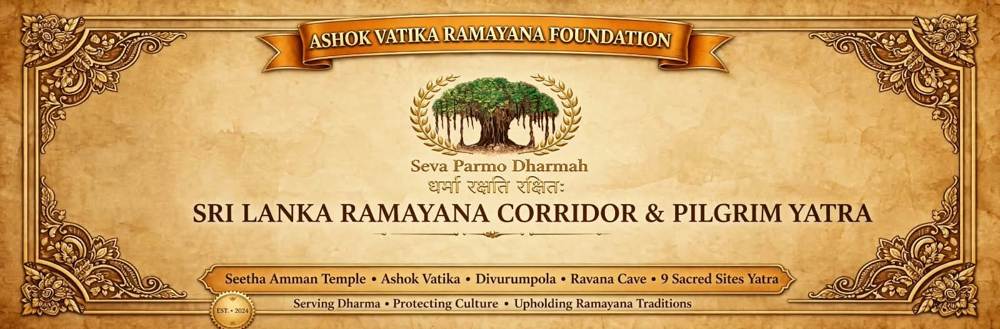
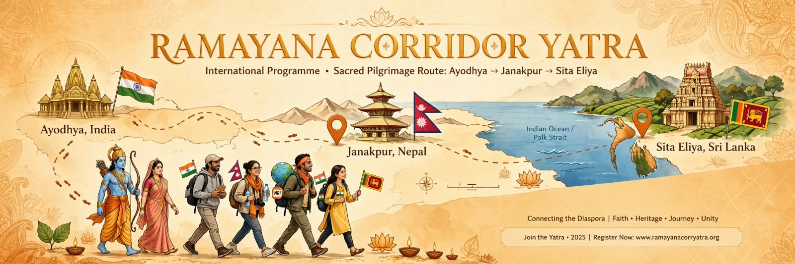

Sri Lanka Ramayana Corridor & Pilgrimage Tour
Affiliated with Rashtriya Seva Samvardhan Samiti...

Affiliated with Rashtriya Seva Samvardhan Samiti...
This specially curated Ramayana Corridor Exposure Visit is designed for public representatives' families, offering a unique opportunity to experience the deep spiritual and cultural ties between India and Sri Lanka.
This journey is more than a pilgrimage; it is a meaningful cultural exchange & Spiritual ties, fostering a deeper understanding of shared heritage, strengthening people-to-people connections, and celebrating the timeless legacy of the Ramayana across borders.
Motto: Seva Dharmah Parama Gahanah (The Virtue of Service is Deep and Sublime)
The Ramayana is not merely a story; it is a philosophy of living. Mata Sita is the soul of this philosophy.
Righteous restraint; Shri Ram ruled within boundaries; Mata Sita endured hardships with dignity. Teaching youth that freedom requires discipline.
Spirit of sacrifice without complaint. From palace to exile and Ashok Vatika, Mata Sita made selfless sacrifices, inspiring youth to achieve greatness.
Selfless service modeled by Hanuman Ji, Bharat Ji, and Laxman Ji. Service as the highest duty—the core principle of VHP.
Social harmony; connecting Nishadraj, Shabari Mata, and the Vanar Sena. Uniting society beyond caste barriers.
Ashok Vatika Temple Renovation & India-Sri Lanka Cultural Bridge
Sri Lanka hosts 52 Ramayana-related heritage sites. Among them, the most sacred is Ashok Vatika (Seetha Eliya), where Mata Sita endured 14 months of captivity with patience in Ravana's Lanka. Currently, the temple is small, amenities are limited, and proper arrangements for Indian devotees are lacking. Under the guidance of the Vishva Hindu Parishad (VHP), our foundation aims to develop this sacred site into a world-class pilgrimage hub.
Execution Strategy: Guided by VHP Dharma Prasar & Seva Departments in collaboration with Sri Lankan Hindu Temple Trusts and the High Commission of India.
Phase 1 Budget Appeal: Temple Renovation + 1 Delegation Tour + 10 School Pathshalas (Inviting CSR funds, NRIs, and devotees).



Program Chaired By:
Shri Avaneesh Tripathi +91-xxx xxxx xxxProgram Manager:
Sharald Ahongsangbam +91-xxx xxxx xxx